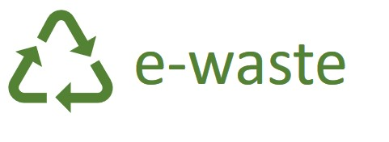

Protecting Our Environment Through Responsible Recycling

E-waste, or electronic waste, refers to discarded electronic devices such as computers, televisions, mobile phones, printers, and household appliances. As technology develops rapidly, electronic devices become outdated and are often thrown away.
Improper disposal of e-waste can harm both people and the environment. Recycling helps recover valuable materials while reducing pollution.
Technology changes quickly, and many people replace their electronic devices every few years. Mobile phones, laptops, tablets, televisions, and gaming consoles are often upgraded even when they still work. This creates millions of tonnes of electronic waste every year.
According to the Global E-Waste Monitor, the amount of e-waste continues to grow faster than recycling efforts. Much of this waste ends up in landfills where it can damage the environment.
A single smartphone contains small amounts of gold, silver, copper, cobalt, and rare earth elements. Recycling old phones helps conserve these valuable natural resources.